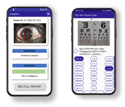
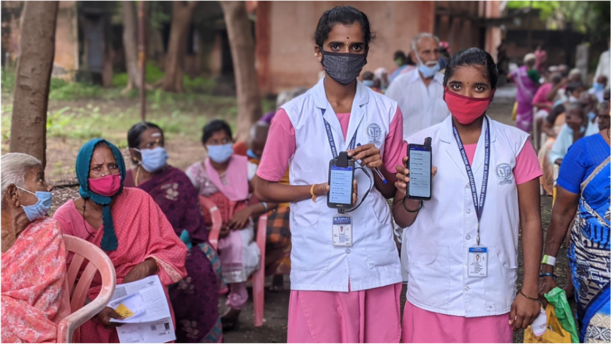

Research

Simple, High Quality Eye Imaging. Affordable smartphone attachment deskills anterior segment eye imaging.

Mobile Field App and Diagnostic Algorithms. Used by frontline health workers to collect complaints, history, visual acuity, and images of the eye.

Visilant in action. Used by doctors and health professionals in India to improve eye health for thousands.